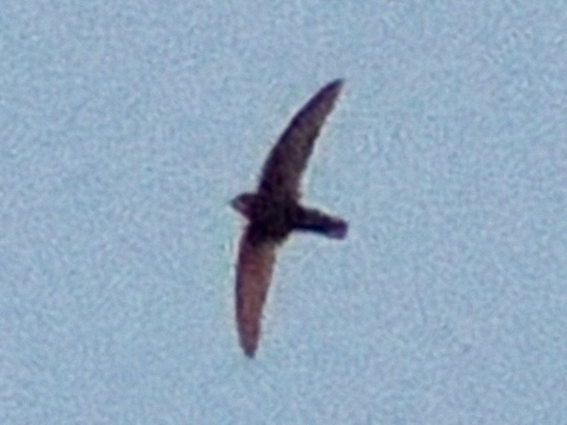
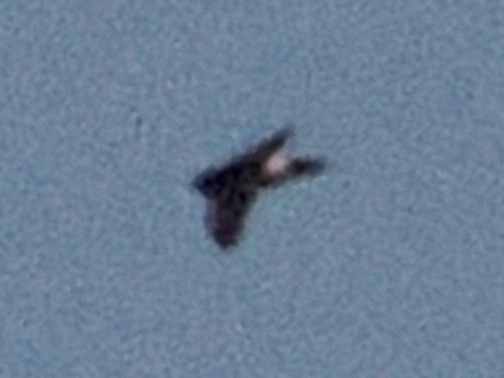

Little Swift
Apus affinis

A smallish swift with a white rump and square tail. Swift sizes can be quite confusing since it's hard to discern at what height they are flying. I sought to find a Little Swift among Pallid and Common Swifts (while trying to get a photo), and after around 30 minutes I only got one. I got anything that intuitively felt different, but nine times out of ten it was another Pallid.

This image, albeit terrible, showcases the white rump.